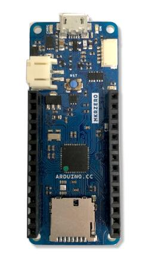
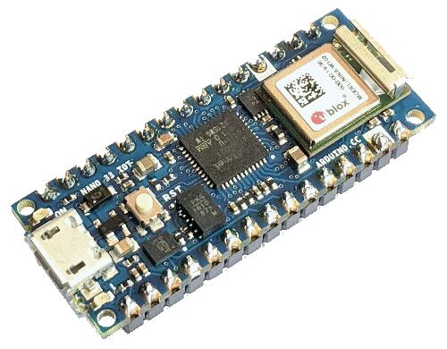
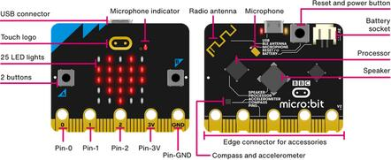

Shields
Shields, also known as “add-on” or “daughter boards”, attach to a board to extend its features and services for easier and modularized prototyping. In Zephyr, the shield feature provides Zephyr-formatted shield descriptions for easier compatibility with applications.
Shield activation
Activate support for one or more shields by adding the matching --shield arguments
to the west command:
west build -b your_board --shield x_nucleo_idb05a1 --shield x_nucleo_iks01a1 your_app
Alternatively, it could be set by default in a project’s CMakeLists.txt:
set(SHIELD x_nucleo_iks01a1)
Shield interfaces
A shield is defined by two key characteristics:
Physical connectors - the mechanical interface
Electrical signals - what each pin actually does
The connection between a shield and a board happens through Devicetree files:
Board side: The board’s devicetree file uses a GPIO nexus node to map connector pins to the microcontroller’s actual GPIO pins. It also defines labels for buses exposed through the connector (like
arduino_i2c,arduino_spi,arduino_uart).Shield side: The shield’s .overlay file references these same labels to describe how its components connect to the board.
At build time, the board’s devicetree and the shield’s overlay are combined to create a complete picture of the hardware setup.
For example, let’s say you have a board with an Arduino connector but no built-in accelerometer. You can add one using an Arduino shield:
The board’s Devicetree defines an
arduino_i2clabel: it is the I2C bus made available on the Arduino connectorThe accelerometer shield’s overlay file also references
arduino_i2cto indicate it uses that same I2C bus. If it needs to use GPIO pins from the connector, it references the GPIO nexus node defined by the board’s Devicetree (e.g.arduino_header).
When you then build for this board with this shield, Zephyr automatically “wires them” together.
Note
Some boards and shields may only support a limited set of features of a shield hardware interface. Refer to their documentation for more details.
Arduino MKR
This is the form factor of the Arduino MKR boards.
{kind=link}

Arduino MKR Zero, an example of a board with the Arduino MKR shield interface
Relevant devicetree node labels:
arduino_mkr_headerSeearduino-mkr-headerfor details on GPIO pin definitions and includes for use in devicetree files.arduino_mkr_i2carduino_mkr_spiarduino_mkr_serial
Arduino Nano
This is the form factor of the Arduino Nano boards.
{kind=link}

Arduino Nano 33 IOT, an example of a board with the Arduino Nano shield interface
Relevant devicetree node labels:
arduino_nano_headerSeearduino-nano-headerfor details on GPIO pin definitions and includes for use in devicetree files.arduino_nano_i2carduino_nano_spiarduino_nano_serial
Arduino Uno R3
This is the form factor of the Arduino Uno R3 board.

Keyestudio CAN-BUS, an example of an Arduino shield (Credit: Keyestudio)
Relevant devicetree node labels:
arduino_headerSeearduino-header-r3for details on GPIO pin definitions and includes for use in devicetree files.arduino_adcSeearduino,uno-adcarduino_pwmSeearduino-header-pwmarduino_serialarduino_i2carduino_spi
For technical details, see Arduino Uno R3 pinout.
Camera and display connectors
These describe connections to cameras and displays (strictly speaking not shields).
Feather
This is the form factor of the Adafruit Feather series of boards. Shields intended for Feather boards are called Featherwings.

Adafruit Adalogger, an example of a Featherwing (Credit: Adafruit)
Relevant devicetree node labels:
feather_headerSeeadafruit-feather-headerfor GPIO pin definitions.feather_adcfeather_i2cfeather_serialfeather_spi
Microbit
This is for the edge connector of the Microbit boards.
{kind=link}

Microbit V2 board uses the Microbit shield interface
See microbit,edge-connector for GPIO pin definitions and
links to technical requirements.
mikroBUS™
This is an interface standard for add-on boards, developed by Mikroe.

3D Hall 3 Click, an example of a mikroBUS™ shield
Relevant devicetree node labels:
mikrobus_headerSeemikro-busfor GPIO pin definitions and links to technical specifications.mikrobus_adcmikrobus_i2cmikrobus_spimikrobus_serial
Note that boards with several mikroBUS™ connectors might define for
example mikrobus_2_spi.
Pico
This is the form factor of the Raspberry Pi Pico boards.

Waveshare Pico UPS-B, an example of a Pico shield
Relevant devicetree node labels:
pico_headerSeeraspberrypi,pico-headerfor GPIO pin definitions.pico_i2cA node label that refers to the same node as either the node labelpico_i2c0orpico_i2c1. It references the node that should be used with priority or as default.pico_i2c0pico_i2c1pico_serialpico_spi
ST Morpho
Development boards from ST Microelectronics often uses the ST Morpho shield interface.

X-NUCLEO-GFX01M2, an example of an ST Morpho shield
Relevant devicetree node labels:
st_morpho_headerSeest-morpho-headerfor details on GPIO pin definitions and includes for use in devicetree files.st_morpho_lcd_spist_morpho_flash_spi
Xiao
This is the form factor of the Seeeduino XIAO boards.

Seeed Studio XIAO Expansion Board, an example of a Xiao shield (Credit: Seeed Studio)
Relevant devicetree node labels:
xiao_dSeeseeed,xiao-gpiofor GPIO pin definitions.xiao_spixiao_i2cxiao_serialxiao_adcxiao_dac
zephyr_i2c / Stemma QT / Quiic
These are four-pin I2C connectors. SparkFun calls these connectors “Qwiic”, and Adafruit calls them “Stemma QT”. The I2C connectors have four pins; GND, +3.3 Volt, I2C data and I2C clock. The most common physical connector is the 1.0 mm pitch JST-SH.
Due to the different brand names, the interface is labeled “zephyr_i2c”.

Adafruit VCNL4040, an example of a zephyr_i2c shield (Credit: Adafruit)
See stemma-qt-connector and grove-header for descriptions
and links to further details.
Relevant devicetree node labels:
zephyr_i2c
Shield porting and configuration
Shield configuration files are available in the board directory under boards/shields:
boards/shields/<shield>
├── shield.yml
├── <shield>.overlay
├── Kconfig.shield
├── Kconfig.defconfig
└── pre_dt_shield.cmake
These files provides shield configuration as follows:
shield.yml: This file provides metadata about the shield in YAML format. It must contain the following fields:
name: Name of the shield used in Kconfig and build system (required)full_name: Full commercial name of the shield (required)vendor: Manufacturer/vendor of the shield (required)supported_features: List of hardware features the shield supports (optional). In order to help users identify the features a shield supports without having to dig into its overlay file, thesupported_featuresfield can be used to list the types of features the shield supports. The values should be the same as the ones defined in the dts/bindings/binding-types.txt file.
Example:
name: foo_shield full_name: Foo Shield for Arduino vendor: acme supported_features: - display - input
<shield>.overlay: This file provides a shield description in devicetree format that is merged with the board’s devicetree before compilation.
Kconfig.shield: This file defines shield Kconfig symbols that will be used for default shield configuration. To ease use with applications, the default shield configuration here should be consistent with those in the Write your devicetree.
Kconfig.defconfig: This file defines the default shield configuration. It is made to be consistent with the Write your devicetree. Hence, shield configuration should be done by keeping in mind that features activation is application responsibility.
pre_dt_shield.cmake: This optional file can be used to pass additional arguments to the devicetree compiler
dtc.
Besides, in order to avoid name conflicts with devices that may be defined at board level, it is advised, specifically for shields devicetree descriptions, to provide a device nodelabel is the form <device>_<shield>, for instance:
sdhc_myshield: sdhc@1 {
reg = <1>;
...
};
Adding Source Code
It is possible to add source code to shields, as a way to meet configuration requirements that are specific to the shield (e.g: initialization routines, timing constraints, etc), in order to enable it for proper operation with the different Zephyr components.
Note
Source code in shields shall not be used for purposes other than the one described above. Generic functionalities that could be reused among shields (and/or targets) shall not be captured here.
To effectively incorporate source code: add a CMakeLists.txt file, as
well as the corresponding source files (referenced in CMake similar to other
areas of Zephyr, e.g: boards).
Board compatibility
Hardware shield-to-board compatibility depends on the use of well-known connectors used on popular boards (such as Arduino and 96boards). For software compatibility, boards must also provide a configuration matching their supported connectors.
This should be done at two different level:
Pinmux: Connector pins should be correctly configured to match shield pins
Devicetree: A board devicetree file,
BOARD.dtsshould define an alternate nodelabel for each connector interface. For example, for Arduino I2C:
arduino_i2c: &i2c1 {};
Board specific shield configuration
If modifications are needed to fit a shield to a particular board or board revision, you can override a shield description for a specific board by adding board or board revision overriding files to a shield, as follows:
boards/shields/<shield>
└── boards
├── <board>_<revision>.overlay
├── <board>.overlay
├── <board>.defconfig
├── <board>_<revision>.conf
└── <board>.conf
Shield variants
Some shields may support several variants or revisions. In that case, it is possible to provide multiple version of the shields description:
boards/shields/<shield>
├── <shield_v1>.overlay
├── <shield_v1>.defconfig
├── <shield_v2>.overlay
└── <shield_v2>.defconfig
In this case, a shield-particular revision name can be used:
west build -b None --shield shield_v2 your_app
You can also provide a board-specific configuration to a specific shield revision:
boards/shields/<shield>
├── <shield_v1>.overlay
├── <shield_v1>.defconfig
├── <shield_v2>.overlay
├── <shield_v2>.defconfig
└── boards
└── <shield_v2>
├── <board>.overlay
└── <board>.defconfig
GPIO nexus nodes
GPIOs accessed by the shield peripherals must be identified using the
shield GPIO abstraction, for example from the arduino-header-r3
compatible. Boards that provide the header must map the header pins
to SOC-specific pins. This is accomplished by including a nexus
node that looks like the following into the board devicetree file:
arduino_header: connector {
compatible = "arduino-header-r3";
#gpio-cells = <2>;
gpio-map-mask = <0xffffffff 0xffffffc0>;
gpio-map-pass-thru = <0 0x3f>;
gpio-map = <0 0 &gpioa 0 0>, /* A0 */
<1 0 &gpioa 1 0>, /* A1 */
<2 0 &gpioa 4 0>, /* A2 */
<3 0 &gpiob 0 0>, /* A3 */
<4 0 &gpioc 1 0>, /* A4 */
<5 0 &gpioc 0 0>, /* A5 */
<6 0 &gpioa 3 0>, /* D0 */
<7 0 &gpioa 2 0>, /* D1 */
<8 0 &gpioa 10 0>, /* D2 */
<9 0 &gpiob 3 0>, /* D3 */
<10 0 &gpiob 5 0>, /* D4 */
<11 0 &gpiob 4 0>, /* D5 */
<12 0 &gpiob 10 0>, /* D6 */
<13 0 &gpioa 8 0>, /* D7 */
<14 0 &gpioa 9 0>, /* D8 */
<15 0 &gpioc 7 0>, /* D9 */
<16 0 &gpiob 6 0>, /* D10 */
<17 0 &gpioa 7 0>, /* D11 */
<18 0 &gpioa 6 0>, /* D12 */
<19 0 &gpioa 5 0>, /* D13 */
<20 0 &gpiob 9 0>, /* D14 */
<21 0 &gpiob 8 0>; /* D15 */
};
This specifies how Arduino pin references like <&arduino_header 11
0> are converted to SOC gpio pin references like <&gpiob 4 0>.
In Zephyr GPIO specifiers generally have two parameters (indicated by
#gpio-cells = <2>): the pin number and a set of flags. The low 6
bits of the flags correspond to features that can be configured in
devicetree. In some cases it’s necessary to use a non-zero flag value
to tell the driver how a particular pin behaves, as with:
drdy-gpios = <&arduino_header 11 GPIO_ACTIVE_LOW>;
After preprocessing this becomes <&arduino_header 11 1>. Normally
the presence of such a flag would cause the map lookup to fail,
because there is no map entry with a non-zero flags value. The
gpio-map-mask property specifies that, for lookup, all bits of the
pin and all but the low 6 bits of the flags are used to identify the
specifier. Then the gpio-map-pass-thru specifies that the low 6
bits of the flags are copied over, so the SOC GPIO reference becomes
<&gpiob 4 1> as intended.
See nexus node for more information about this capability.